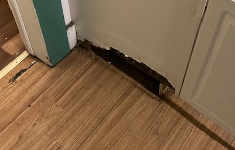
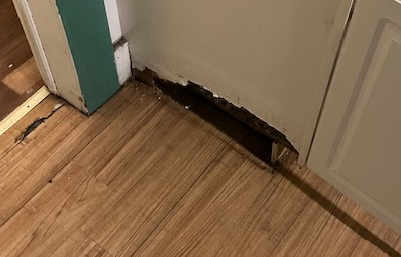
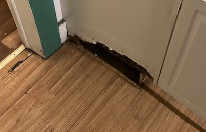
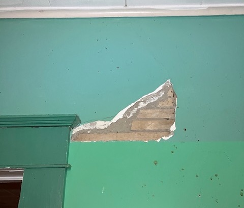
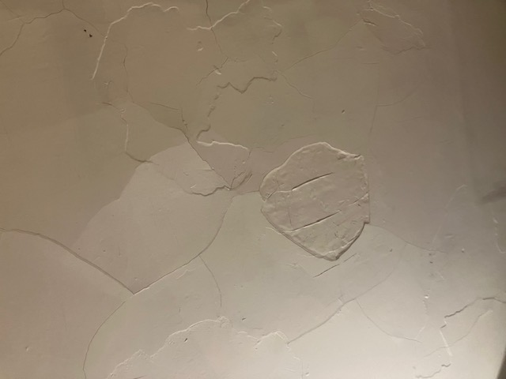
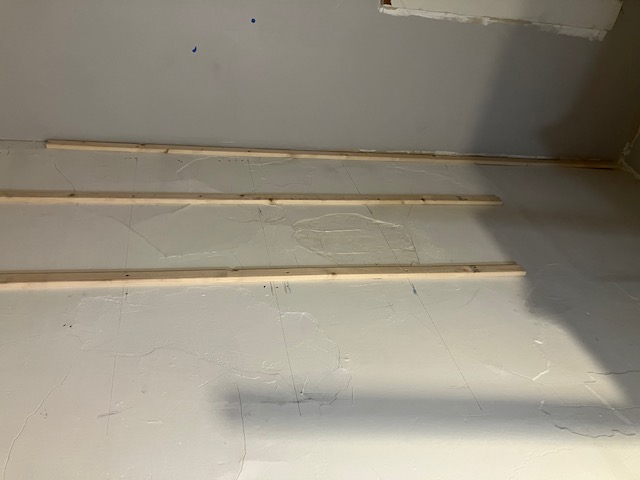

- New paint
- Refinish floor
- Replace fake fluorescent light +
- Frame out new doorway and door +
Renovation Project
Click on any text that is followed by a '+' to expand for more information and pictures. Click again to minimize it.
Expand all Sections +Kitchen +
- New paint
- New countertops
- New flooring
- Remove wood block, reroute gas line +
- Shift stove placement +
- Repair cabinet water damage +
- Repair plaster wall +
When first walking the property, there was this inexplicable wooden block on the floor in the kitchen where the oven/stove should go. Also the gas line for the stove was up too high and sticking too far out of the wall.
Upon opening up the box, it turns out that it was there to cover up an old chimney.
Used a hammer drill to remove some bricks, and a circular saw to cut the ones that needed to stay(picture is further down in this section). Rerouted the gas line.
Added an electrical outlet, covered the hole in the wall.
Installing the new kitchen flooring allowed for it to be cleaned up even more. This shows the cut down bricks with the old floor, and after the new floor had been installed.
After removing the wooden block behind the stove (detailed above), moved the stove to be flush with the bump-out in the kitchen wall.
This allowed for installing a longer countertop than had previously been in place. Installed a board to act as a block or buffer between the stove and the lower cabinets.
A previous leak under the sink had ruined the wall of the cabinet.
 Cut away and cleaned up what was there.

Covered up that panel by gluing on another panel, re-attached the lower trim.
Cut away and cleaned up what was there.

Covered up that panel by gluing on another panel, re-attached the lower trim.
Cut away and cleaned up what was there.

Covered up that panel by gluing on another panel, re-attached the lower trim.
There was a small crack in the wall plaster near the kitchen doorway.
When prodded, it turned into a pretty big hole.

Patched it with drywall mud and mesh tape.
Sanded, painted it.
Living Room +
- New paint
- Refinish floor
- Replace fixture in unit entryway +
- Repair hole in wall +
- Add overhead lighting +
The apartment entryway originally had a lightbulb that shone through a patterned translucent sheet (patterned sheet not shown).
Installed a can light in its stead.
There was this weird patch in a corner of the living room.
Turns out it was covering a hole that existed as the exhaust for a previous (probably pellet) stove.
Capped it off with some styrofoam insulation and patched the wall itself up.
Originally this room had no overhead lighting.
Installed a can light in the center of the room, wired to a dimmer switch by the doorway to the kitchen.
Primary Bedroom +
Middle Bedroom +
- New paint
- Refinish floor
- Remove stickers from door +
- Replace broken wall in closet +
This door had been covered in stickers, which had then been painted over, still showing through.
 Took door down and belt sanded off the stickers.
Repainted door, rehung it.
Took door down and belt sanded off the stickers.
Repainted door, rehung it.
Took door down and belt sanded off the stickers.
Repainted door, rehung it.
This plaster wall had some big holes in it.
Took out the closet shelf and removed the remainder of the plaster.
Hung drywall, painted, re installed shelf and clothes hanger bar.

Rear Bedroom +
- New paint
- Refinish floor
- Fix broken doorknob
Bonus Room +
- New paint
- Refinish floor
- Remove chimney +
- Install new ceiling, lights, crown molding +
- Resurface walls +
This room had a big bump sticking out of the wall which was an out of use chimney.
Removed the plaster.
Removed the bricks, the shelf they sat on, and the lath as it was too inconsistent in thickness.
Put drywall in the hole, patched and leveled it in.
Painted.
The ceiling in this room had lots of cracked plaster.

Framed out furring strips attached to the joists in the ceiling.

Hung sheetrock.
Installed can lights and painted the ceiling.
 Installed crown molding
Installed crown molding

Installed crown molding
The walls in this room had previously had a skimcoat applied to them that was too thick, and in drying, resulted in many "valleys" in the surface of the walls that were quite obvious.
Applied a thin coat of joint compound over all the walls to smooth them out. Sanded then painted the walls.
Applied a thin coat of joint compound over all the walls to smooth them out. Sanded then painted the walls.
Bathroom +
- New paint
- Replace cartridge in leaking sink faucet
- Replace portion of torn up floor +
- Re-route laundry drain pipe +
The floor in the corner of the bathroom had some holes in it. Cut the linoleum and pulled it up.
Cleaned and painted the area.
Installed 6 inch wide peel and stick flooring tiles, added a threshold transition to the old floor.
The original drain pipe for the laundry machine (which runs exterior to the house on the back porch) had somehow lost its slope, likely leading to a back-flow of water.
Moved the hole in the wall up to accomodate moving the start of the drain pipe up higher.
Front Porch +
- Replace flooring +
The front porch came with 1 by 1 peel and stick tile floors, that were coming unglued from the subflooring.
Ripped those up.
Scrubbed the subfloor then installed a sheet of linoleum flooring and new quarter round trim.